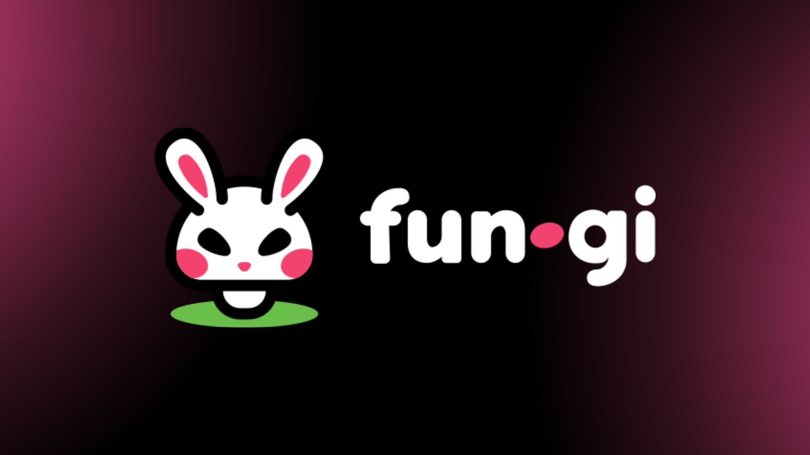
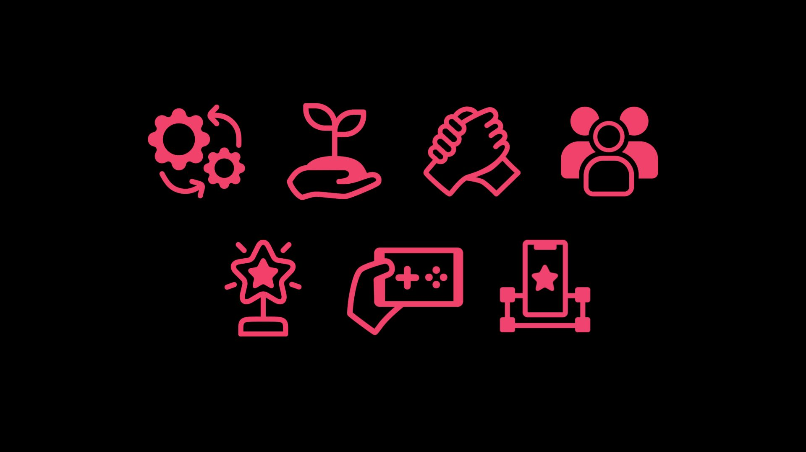
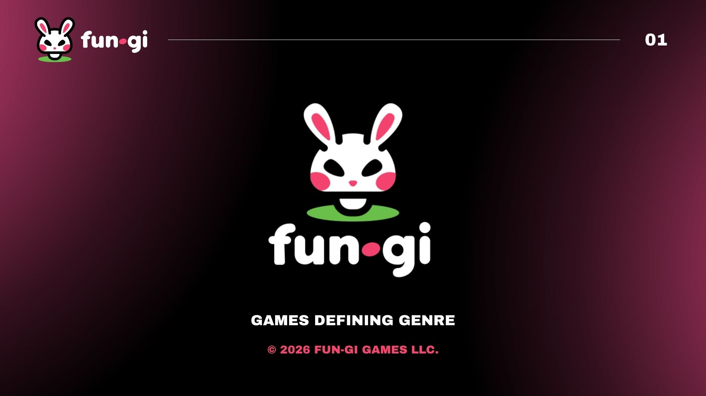
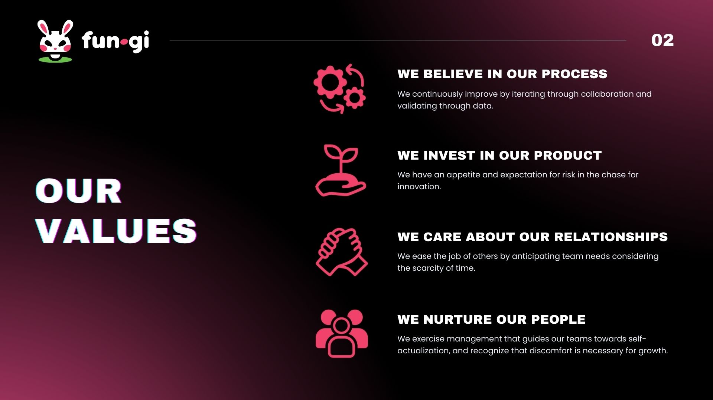
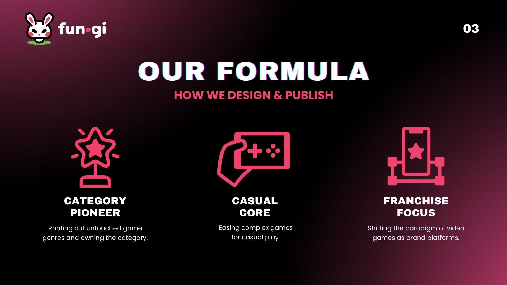
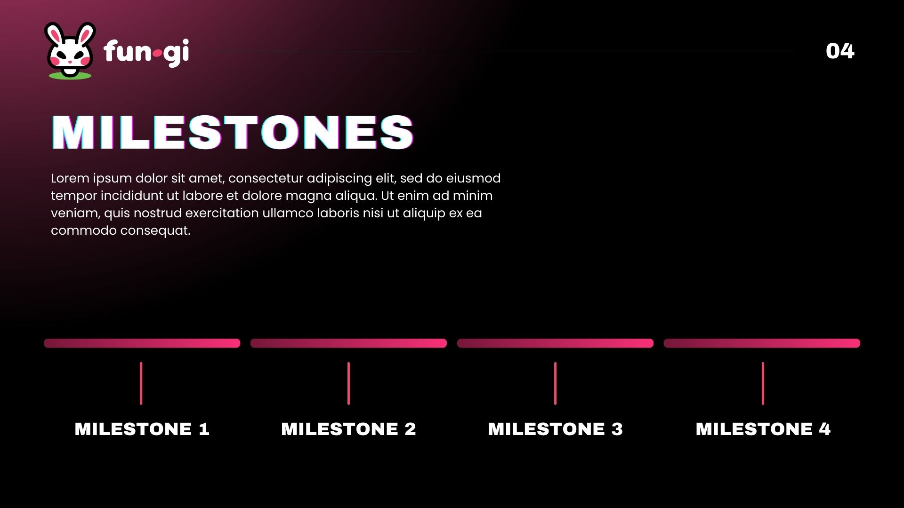

FUN-GI Games
Iconography & Pitch Deck System
A pitch deck presenting FUN-GI Games' brand, values, and iconography, along with its approach to developing playful mobile games and franchise partnerships.

Identity Narrative
FUN-GI Games creates playful mobile games with a focus on fresh ideas and memorable experiences. The pitch deck and iconography introduce the studio's identity, values, and approach to game development.
Problem
FUN-GI's marketing assets and presentations lacked a consistent visual language, making it harder to communicate the studio's personality and work as one cohesive brand.
Solution
I created a unified pitch deck and iconography system to bring greater consistency to FUN-GI's presentations and marketing materials, using bold typography, a distinctive color palette, and a flexible set of game-focused icons.






Programs Used
Adobe Illustrator, Figma, and Canva